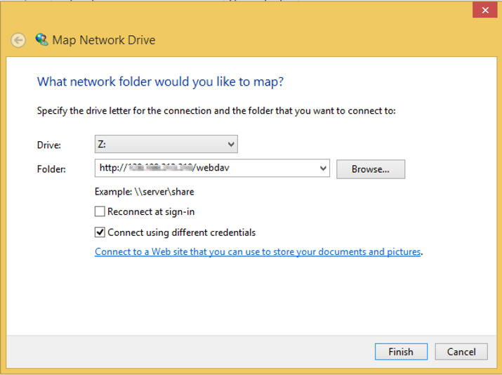
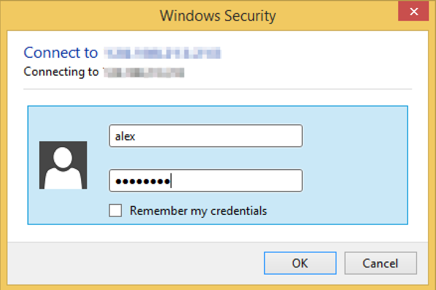

Windows¶
On Windows, open File Explorer. On the left sidebar, you should find the Network icon.

Right click on the Network icon. It should show the context menu with the option Map network drive. Click on that.

Enter the server address in the folder field. Select the Connect using different credentials if your login is different. Press Finish.
You will be prompted for a username and password. Enter them and press OK.
Once you have connected, it should appear as a network drive on the left sidebar of your File Explorer.